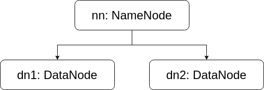

7.0 MapReduce 编程
MapReduceの使用を学んだ後、Word Countのような統計や検索タスクを処理できるようになりましたが、客観的に見てMapReduceができることはまだまだたくさんあります。 MapRedu...
6.0 MapReduce 使用
以前のMapReduceの概念を学習した後、私たちはMapとReduceが何であるか、そしてそれらの動作方法をすでに理解しているはずです。この章では、MapReduceの使用方法を学習します。...

5.0 HDFS 集群
HDFSクラスターはHadoopクラスターの上に構築されています。HDFSはHadoopの主要なデーモンであるため、HDFSクラスターの構成プロセスはHadoopクラスター構成プロセスの代表です。 ...

4.0 HDFS の設定と使用
以前に述べたHadoopの3つのモード：スタンドアロンモード、擬似クラスターモード、クラスターモード。スタンドアロンモード：Hadoopは単なるライブラリとして存在し、単一のコンピューター上でMapReduceタスクを実行できます。単に...

3.0 Hadoop 概念
この章では、Hadoopの概念と構成要素に重点を置いて紹介します。理論的な章です。急いでいる場合は読み飛ばしても構いません。しかし、著者は読み飛ばすことをお勧めしません。後の章と密接に関連しているからです。Hadoo...

2.0 Hadoop 运行环境
Hadoopはクラスター向けに設計されたソフトウェアであるため、その使用方法を学ぶ際には、複数のコンピューターでHadoopを構成する必要がある状況に遭遇することが避けられません。これは学習者にとって多くの障害をもたらします。...

1.0 Hadoop 教程
Hadoopは、Apache財団によって開発・保守されているオープンソースの分散コンピューティングおよびストレージフレームワークです。 Hadoopは、大規模なコンピュータクラスターに信頼性が高くスケーラブルなアプリケーション層のコンピューティングとストレージを提供します...